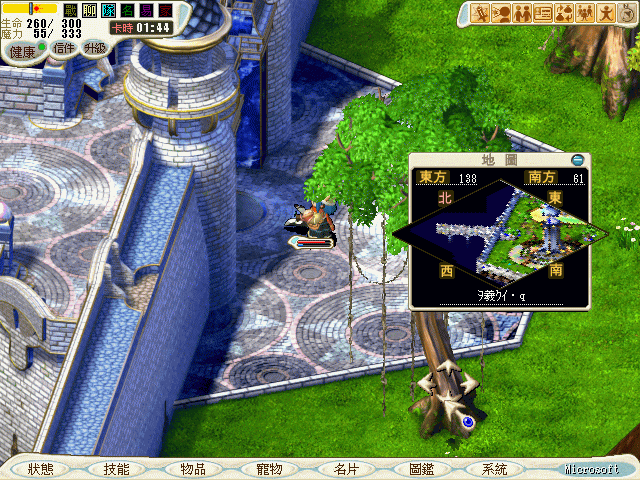
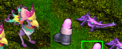
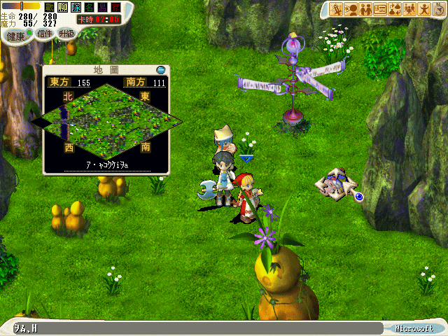
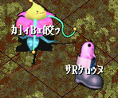
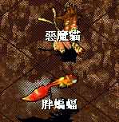
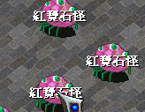

レベル上げにオススメの場所。
■■■■Lv13ぐらいまで
ザンクの西側から出てるところにある「ケレブレンの森」

たまーにグレートニワトリでますが、ナイフチキン、ブーツの、ポイズンリザードなど出現。

敵Lvは10-16ぐらい。
LP低いのでさくさく倒せます。
ただし、台湾版は妙にＱが出にくいので赤字は必死かもしれません・・・。
風穴行くときはよく敵にあうのに、ここで稼いでるとエンカが妙に悪いのも仕様でしょうか・・・。
■■■■Lv20ぐらいまで
ザンクの下の出口からいける「メンブレム盆地」（名前こんなかんじだったよね？（；´Д｀））
出口の選択肢では「否」を選びます。
を、左に寄り添いながら歩いてるとおぢーさんが寝ています。（東方157.南方114）

ＰＴを解除して「是」を選ぶと夢魔の洞窟に落とされます。
ブーツとハナオドリ？でレベル１８〜２０ぐらいから出現します。

階層降りれば敵のレベルも上がるので20ぐらいまではさくさく上がります。
あまり低レベルで行き過ぎると、敵の回避があなどれなく高いので地味に苦戦します・・・。
敵の数も多いので５人ＰＴでいったほーが、稼ぎの効率もいいと思われます。
睡眠を多用してきますので、少人数で行くとかなり効率悪くなるんです(´・ω・｀)
ここはＱはそこそこ出ますので稼ぎながら小銭稼ぎにもなります。
純風クリオススメです。
■■■■Lv30ぐらいまで。
ザンクの右上の出口から出たところにあるブラキウム高地。
ナイフチキンと岩のエリアは敵レベル25〜30で、チキンが弱いのでさくさく倒せます。
ただし、Ｑをある程度振ってないとナイフチキンに当てれないし先制されるしでボロボロです(´・ω・｀)
■■■■Lv35ぐらいまで。
ブラキウム高地のチキンエリアよりもうちょっと上にいったところ。
敵レベル30〜35ぐらいで、骨やブーツ、サメとかでてきます。
３垢とかの自演でなら稼ぎやすい場所ですが、骨がいるのでＰＣが妙に重くなります・・・。
しかもブーツが昏睡かけてくるので、ハマるとズタボロになります(´・ω・｀)
すきらげも兼ねて稼ぐなら、ゲート使えないから歩きになりますが大学前のがいいと思います。
羽音の洞窟もありますが、あそこはガード多いし、敵の数が多いのでLv30＊５人とかで行くと危険です。・゜・(ノ∀`)・゜・。
■■■■Lv30台後半。
アルパネスからちょい右にある混乱洞窟。
不意打ちで混乱になるとかなりやっかいですが、３０台後半ならそこそこ稼ぎやすいです。

アルパネスで回復で往復できるのもポイント高いです。
ちなみに２層目に行くと敵の出現数が増えます。
■■■■Lv45ぐらいまで。
行くのに少し道を覚える必要がありますが、塔の４１Ｆが最高です！
この画像のモンスがでるんですが、殆どガードばかりなのでＧＢ連荘で余裕です。
ただ時間帯によって、ＬＰの一番高いキャラorペットにメテオ連発してくるのが厄介です。
時間帯については特定できていません。

もしくは定番ですが、すきらげも同時進行でいくとなればカンナベラもいいと思います。
街から少し下にいけば、Lv42〜44の敵もでますし。
回復とＱ売りできるのはやっぱり魅力的ですね。
■■■■Lv46〜
ふつーに炎の洞窟（炎之洞窟）が最高です！
経験値だけを見るなら40台のうちは塔４１Ｆが美味しい気もしますが、宝石ももらえますしね！
■■■■Lv50〜55
台湾限定クエストの途中なのですが「樹氷」が一番稼ぎやすいです。
キーアイテム等必要ですが、とってしまえば、再度取り直す必要もないです。
ＰＴで誰かもってれば、全員入れます。
クエスト概要はこちら↓
http://hagane.main.jp/xgt/wiki.cgi?page=%B0%AD%CC%B4%28%C9%D4%BB%D7%B5%C4%2D3%29
敵はLv55のドリアードのみで、大量に出現します。
そしてエンカ率が異様に高いです。
Ｑやクリ欠片などのドロップアイテムは全くありませんので赤字は覚悟です。
■■■■Lv55〜74
言うまでもなく、赤字覚悟ですが連携牛が一番効率いいです。
経験値なら74まで牛で稼ぐのがベストですが、金銭面考えるなら70から風穴もいいと思います。
■■■■Lv74〜
金銭的にも、経験値的にも風穴が最高です(〃∇〃)
■■■Lv77〜
長老のカギというものを使って行く稼ぎ場らしいのですが、現在まだ行ったことないので情報だけ。
http://hagane.main.jp/xgt/wiki.cgi?page=%C2%E6%CF%D1%A5%AA%A5%EA%A5%B8%A5%CA%A5%EB%A5%AF%A5%A8%A5%B9%A5%C8
ここの台湾オリジナルクエストのＡ〜Ｄってクエストを進めたらいけるようになるみたいです。
火谷というところでは、敵レベル94-99らしいので、結構がっつり稼げるようです。